ST-389-3-MATHS (M)-3-VOL-1
3
fc... fc
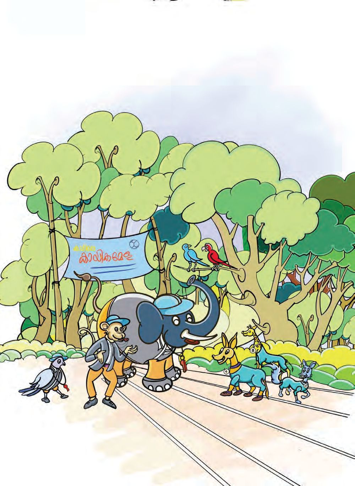
ST-389-3-MATHS (M)-3-VOL-1
3
fc... fc

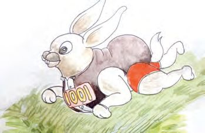
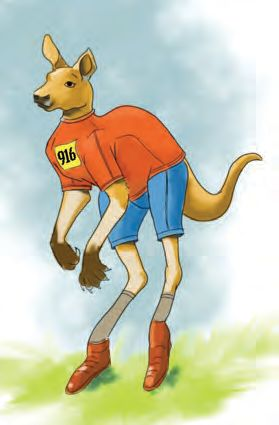
ഗണിതം
ാൻേഡർഡ് - III
കായികേമള
പൂമല ാ ിൽ കായികേമള നട ുകയാണ്. മ ര ളിh പെ ടു ു എ ാവരും െച ് ന h വാേ താണ്. 986 മുതലു 15 േപh േലാങ്ജ ് മ ര ിന് ത ാറാകുക.
േലാങ്ജ ് മ ര ിൽ പെ ടു ു വരുെട െച ് ന റുകൾ എഴുതുക.
990
986
ഞാനുമുേ
...
നീ 1001 ആണ്. േലാങ്ജ ിh നിെ േപരി . 1000 ഉം 1 ഉം േചh താണ് 1001.
െച ് ന h താെഴ വീണേ ാ. മ ി ലാ ി തരുേമാ? 1002, 1003, 1004, ......., ........, ........, ........, ........., ........., ........, 1012
34
986

ആയിരം... ആയിരം
അനൗൺസ്െമ ് മ ാടിെപറു ൽ മ ര ിൽ പെ ടു ു വരുെട െച ് ന രുകളാ ണ് പ ികയിൽ. അനൗൺസ് െച ണെമ ിൽ ഒഴി കള ൾ പൂർ ി യാ ണം. കു നാനെയ സഹായി ാേമാ ? 879
എ
ൂ ി എഴുപ
ി ഒൻപത്
904 918 906 809 749
എ.ടി.എം. സ ാനം േ ാൺസർ െച ത് ി ു ത യാണ്. സ ാന ൾ ് 760 രൂപയായി. പണെമടു ാൻ എ.ടി.എം. ൽ േപായി. കാ ിെല എ.ടി. എ ിൽ 100 െ യും, 10 െ യും 1 െ യും േനാ ുകളും നാണയ ളും മാ േമ യു ൂ. ഏെതാെ േനാ ുകളും നാണയ ളും കി ിയി ു ാകും ? എ വീതം ? ഞാൻ കണ ാ ിയത്
35

ഗണിതം
ാൻേഡർഡ് - III
പണം േശഖരി
ാം
കായികേമളയുെട ഭ ണ ിനായി പണം േശഖരി ാൻ നാലു േപെര ചുമതലെ ടു ി. കി ിയ തുക എഴുതിയിരി ു ത് േനാ ൂ... ചുമതല
100 രൂപ
10 രൂപ
1 രൂപ
9
8
3
7
14
േനാ ുകൾ േനാ ുകൾ നാണയ
ൾ
തുക 983
785 909
10 ച ി രു ് േശഖരി തുക 785. ഈ തുക എ എ ് കാ ിെല കൂ ുകാർ ആേലാചി ത് േനാ ൂ... 7 നൂറുകൾ ........... പ ുകൾ 5 ഒ ുകൾ
െനെയാെ
യാകാം
................. ഒ ുകൾ
7 നൂറുകൾ
78 ........... 5...........
........... ഒ ുകൾ 700 + ........... + 5
70 പ ുകൾ 85 ...........
6 നൂറുകൾ ........... പ ുകൾ 5 ഒ ുകൾ
600 + ...........
കു ൻ മൂ ് കി ിയ 909 രൂപെയ വ ത േനാ ുബു ിൽ എഴുതൂ... 36
രീതിയിൽ

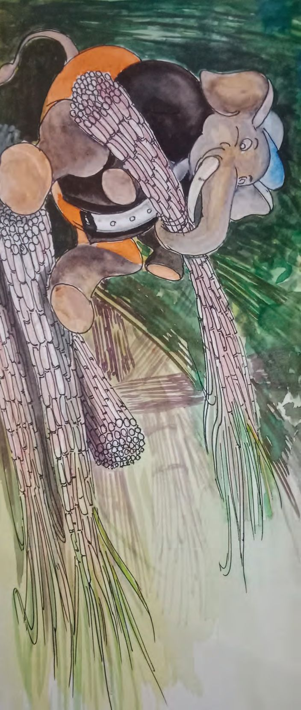
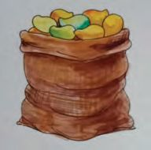
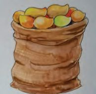
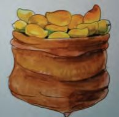
ആയിരം... ആയിരം
തീ മ
രം
തീ മ ര ിനായി കരി ് െക ുകളാ ി വ ുകയാണ് മ നാന. 100 എ ം വീതമു 20 െക ുകൾ ത ാറാ ിവ ു. ആെക എ കരി ുകൾ?
കരി ുെക ിെ എ ം
തീ മ രം നട ു ിട േ ് കരി ് െകാ ുേപാകാെമ ് ജി ൻ ജിറാഫും ബാലു രടിയും ഡി ു കഴുതയും സ തി ു. എ എ ം വീതമാണ് ഓേരാരു രും െകാ ു േപായത് ?
കരി ുകളുെട എ ം
6 10
തീ മ ര ിനായി െകാ ുവ 2000 മാ ഴം 4 ചാ ുകളിൽ തുല മായി വ ിരി ുകയാണ്. ഓേരാ ചാ ിലും എ വീതം ?
37

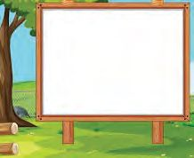
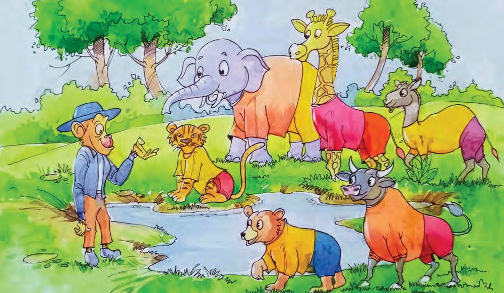
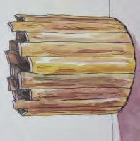
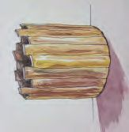
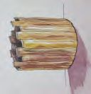
ഗണിതം
െവ
ാൻേഡർഡ് - III
ംകുടി മ
രം െവ ംകുടി മ ര ിന് േപര് നൽകിയവർ എ യും െപെ ് എ ിേ രുക.
50
50 ലി h, 20 ലി h, 10 ലി h െവ ം വീതം
50
നിറ പാ ളാണു ത്. ഏ വും കൂടുതh െവ ം കുടി ു യാh ജയി ും. 20
20
20
20
10
38
10


ആയിരം... ആയിരം
ഓേരാരു രും കുടി െവ പ ിക പൂർ ിയാ ൂ...
ിെ
അളവ് േനാ
െവ
ിെ
50 ലി ർ
20 ലി ർ
10 ലി ർ
ജി ൻ ജിറാഫ്
1
3
1
െകാ നാന
3
4
2
രടി
2
2
കു െനാ കം
5
10
േപര്
ജി ു
ൂ...
അളവ് ആെക ലി ർ
80
മ ൻകടുവ ചി ുകാ ുേപാ
്
100
ആരാണ് ജയി ത് ? 50 ലി റിെ 20 ലി റിെ
2 പാ ം െവ
എ
10 ലി റിെ
പാ
ം കുടി ു തിനു പകരം പാ ം െവ ം കുടി ണം? ിെല െവ
മായാേലാ?
േവനൽ ാല ് െവ ം കുറയുെമ ് അറിയാമേ ാ... െവ ം പാഴാ ാെത ഉപേയാഗി ണം. ഓേരാരു രും കുടി െവ ിെ ലി റിലു അളവ് ആേരാഹണ മ െലഴുതൂ...
39
ി


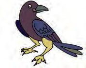
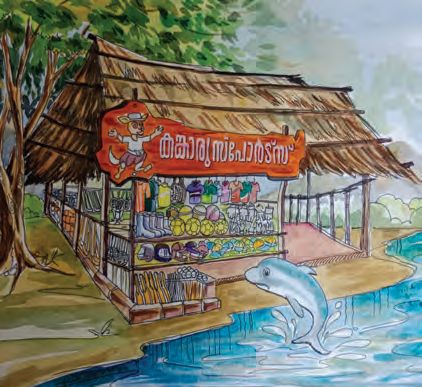
ഗണിതം
സ ാന
ാൻേഡർഡ് - III
ൂ h കായികമ ര ിൽ ആദ െ മൂ ു ാന ളിൽ വ വർ ് ക ാരു േ ാർട്സ് 900 രൂപ വീതമു സ ാന ൂ ണുകൾ നൽകി. ഓേരാരു ർ ും മൂ ു സാധന ൾ തിരെ ടു ാം. അവർ തിരെ ടു ത് ഏെതാെ സാധന ളാകാം ?
് ബാ ്
750
ഷ ിhബാ ്
300
ഫുട്േബാൾ
650
ി
ഷ ിh േകാ
്
250
െന ്
400
േവാളിേബാൾ
350
വില (രൂപ)
സാധനം
വില (രൂപ)
സാധനം
ഷൂസ്
600
ജഴ്സി
200
ൗസ് െചസ് േബാhഡ്
150
ി
തിരെ
ടു
40
100 50
്േബാൾ
സാധന
h
വില

ആയിരം... ആയിരം
കു ികളുെട മ കു ികളുെട മ മുയലാണ്.
രം ര
ിനായി െച ് ന റുകൾ ത ാറാ
ു ത് മി ു
• 100 മീ ർ ഓ മ
ര ിനായി 10 മുതൽ 20 വെരയു െച ് ന റു ി. െച ് ന റുകെളഴുതിയ എ കാർഡുകളു ് ?
കൾ ത ാറാ
• നീ ൽമ ര ിന് 30 മുതൽ 50 വെരയു കാർഡുകൾ ഉ എ േപർ ാണ് കാർഡുകൾ െകാടു ത് ?
ാ
ി.
• െന ി െപറു ൽ കളി ായി 60 മുതൽ 100 വെര കാർഡുകൾ ഉ ാ ണം. എ കാർഡുകൾ േവണം ? ഞാൻ ക
• ആെക ര
സംഖ കൾ എ
• 100 മുതൽ 200 വെര എ • ആെക എ
ുപിടി
രീതി.
?
സംഖ കൾ ?
സംഖ കൾ ?
മൂ
• 1 നും 100 നും ഇടയിh എ
ഒ സംഖ കൾ ഉ
്?
• 1 നും 100 നും ഇടയിലുളള ഇര സംഖ കളുെട എ ം എ യാണ് ?
ഞാൻ കണ
ാ
ിയ രീതി.
മേ െത ിലും രീതികളുേ
41
ാ?


ഗണിതം
ാൻേഡർഡ് - III
കാർഡുകളി
സംഖ ാകാർഡ് കളിയിൽ ഞാനുമുേ
...
ഓേരാരു ർ ും 4 കാർഡുകൾ വീതം െകാടു ും. അ ൾ ആവർ ി ാെത ഏ വും കൂടുതൽ മൂ സംഖ കൾ ഉ ാ ു ആളാണ് ജയി ുക. മണിയനുറു ിന് കി ിയ കാർഡുകൾ േനാ 9
ഏെതാെ
3
മൂ
ൂ... 2
സംഖ കളായിരി
ഉ ാ ിയ ഏ വും വലിയ സംഖ
ും ഉ
ാ
5
ിയത് ?
ഏ വും െചറിയ സംഖ
ഏ വും െചറിയ സംഖ അബാ സിh വര ു കാണി ൂ. നൂറ് 42
പ
്
ഒ ്


ആയിരം... ആയിരം
തുടർ യായ ര 1 + 2,
് സംഖ കളുെട തുകയുെട
2 + 3, ...
5 + 6,
കൂടുതൽ ഉദാഹരണ
ൾ െച ്
േത കതെയ ാണ് ?
6 + 7, ...
േത കത ക
•ര
് ഒ സംഖ കളുെട തുകയുെട
•ര
് ഇര സംഖ കളുെട തുകേയാ ?
ുപിടി
ൂ.
േത കതെയ ാണ് ?
• 6 ഉം 60 ഉം 600 ഉം േചh ാെല ? • 8 നൂറുകൾ േചർ
വിലയിരു 1. 7 നൂറും 6 പ
സംഖ എ
പ
ുകൾ േചർ തിന് തുല മാണ് ?
ൽ
ന
ൾ
വർ
ും 5 ഒ ും േചh
് സംഖ യു
ാ
ിയേ ാh 675
എെ ഴുതി. ശരിയായ സംഖ ഏതാണ് ? 675 െ കൂെട എ
2. അബാ
സിെല 100 െ ാന ു നി ് ഒരു മുെ ാന ് ഇ ാh സംഖ എ കുറയും ?
ഇേ ാഴെ
ടു
്പ
ിെ
സംഖ
് മാ ുേ ാഴുളള സംഖ
നൂറ് 100 െ
എ
ുകൾ
ാൽ ശരിയായ സംഖ ആകും ?
േചർ
മു
പ
ാനെ
ഒരു മു
് ഒ ിെ
കുറയും ? 43
പ ാന
്
ഒ ്
് ഇ ാൽ സംഖ


ഗണിതം
അബാ
ാൻേഡർഡ് - III
സിൽ ഇേ ാഴുളള മു
ഏ വും വലിയ മൂ
സംഖ
ഏ വും െചറിയ മൂ
സംഖ
3. പാേ h പൂh
ിയാ
ുകൾ മാ ം ഉപേയാഗി ് ഉ
ാ
ാവു
ാം.
•
596, 597, 598, .……., .…….
•
102, 112, 122, …….., .…….
•
123, 234, 345, …….., .…….
•
986, 886, 786, …….., .…….
•
900, 890, 880, …….., .…….
• 4. കളം പൂh
ിയാ
ൂ... 789 ഒ
789
789
78 പ
ുകൾ
9ഒ
ുകൾ
44
ുകൾ